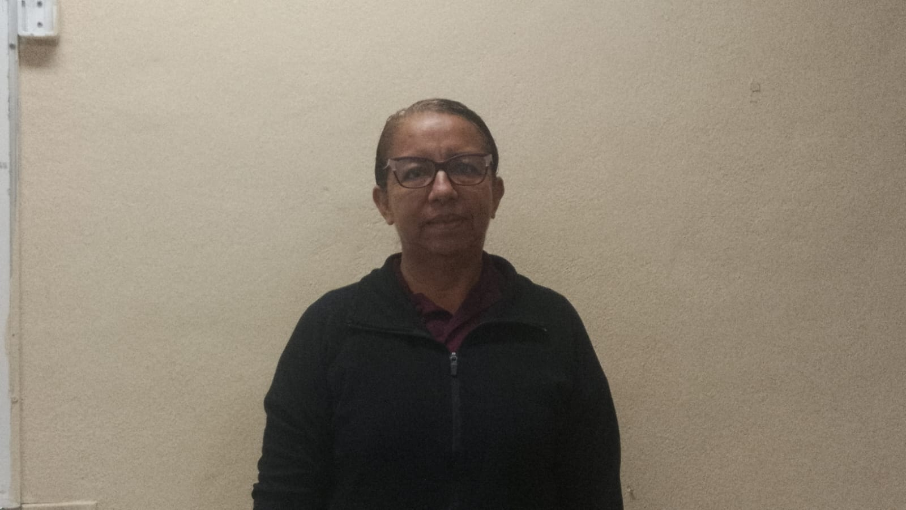
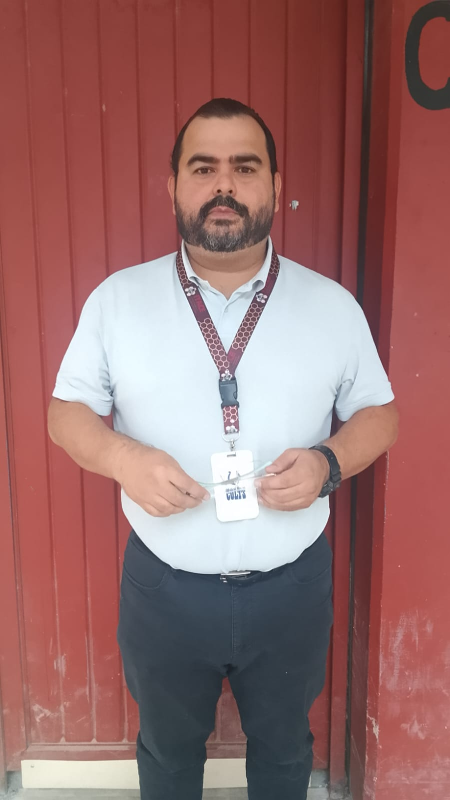
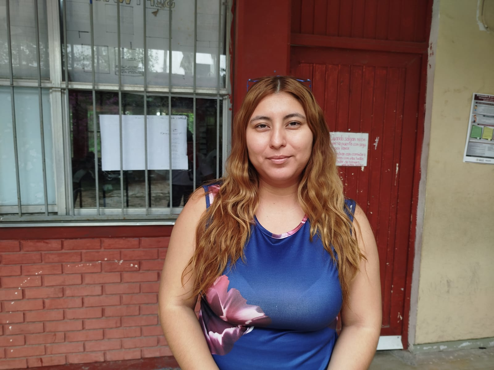
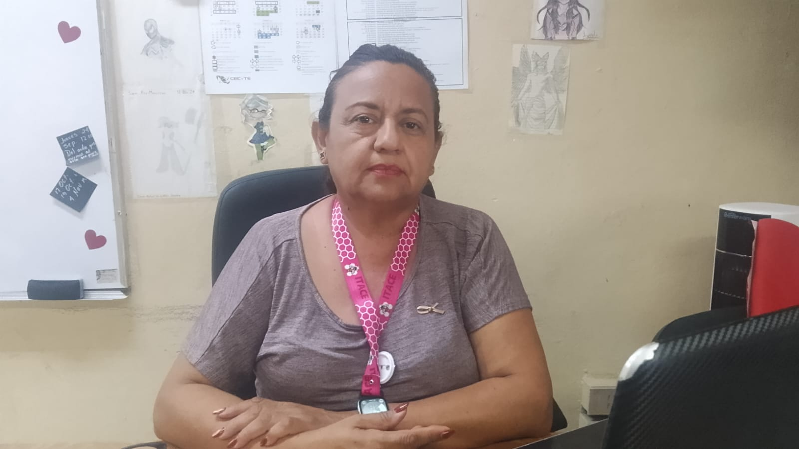
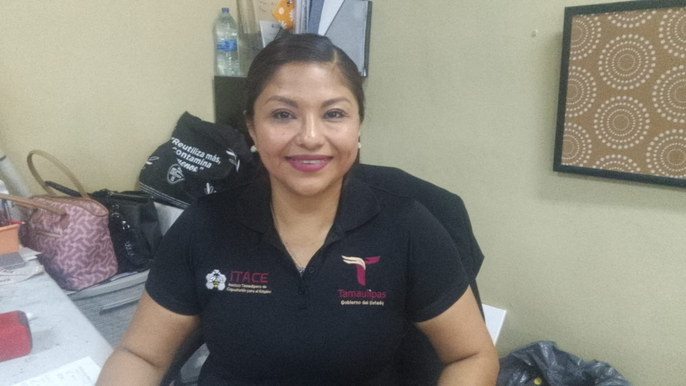
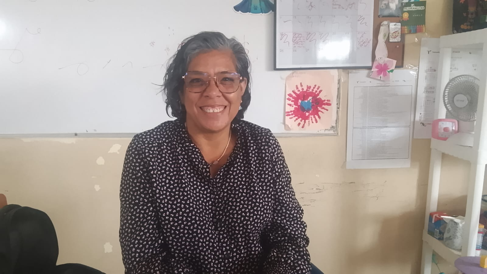
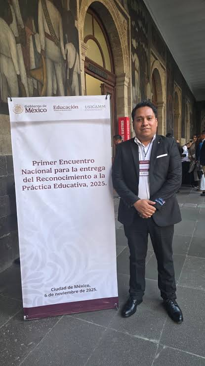
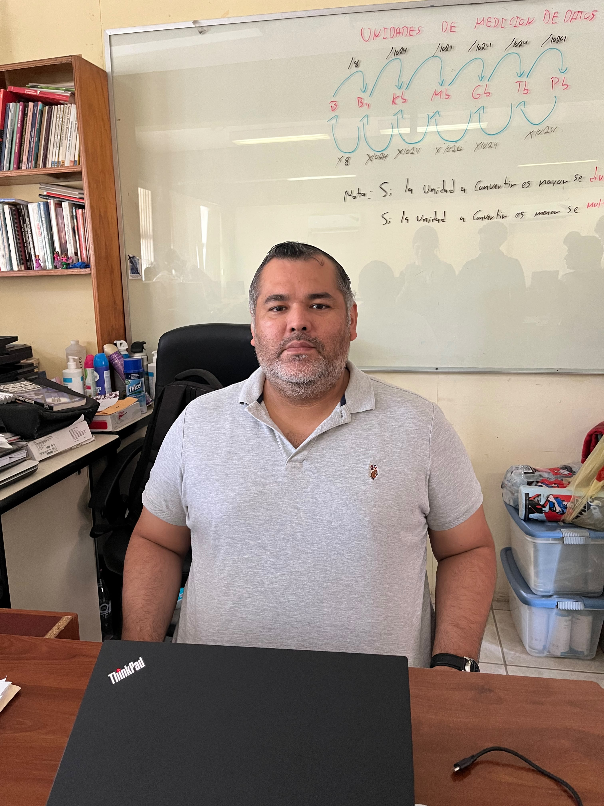
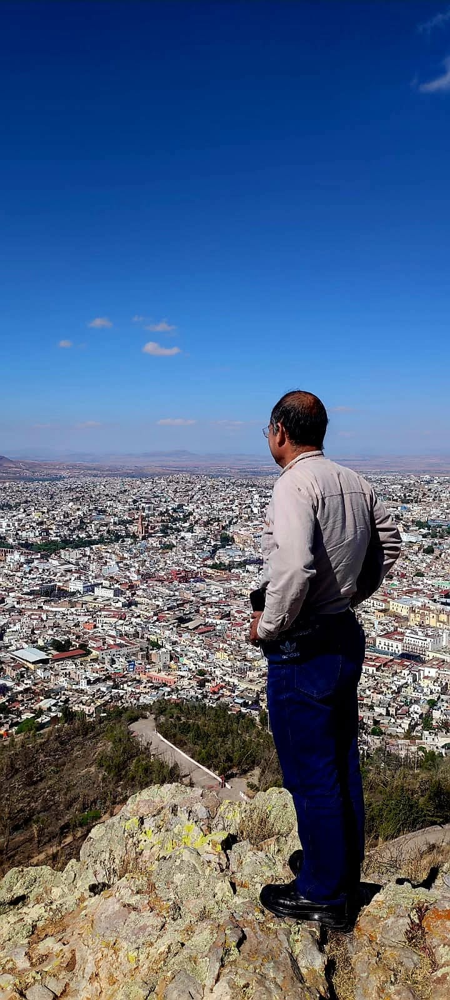

Norma Elena Torres Quiñones
Área: Ciencias Naturales e IT.
Formación: Ingeniería Química y maestría en Docencia.
Semestres: 1.º, 3.º y 5.º

Luis Enrique Lerma Martínez
Área: Lengua y Comunicación y Conciencia Histórica.
Formación: Licenciatura en Pedagogía, Ingeniería Petrolera y diplomado en Competencias Docentes.
Semestres: 1.º, 3.º y 5.º

Bertha Alicia Zapata Aldape
Área: Matemáticas.
Formación: Doctorado.
Experiencia: 2 años y medio.
Semestres: 1.º y 3.º

Carlos Melecio Carmona Olivares
Área: Diseño Gráfico e Inglés.
Formación: Maestría en Educación Básica por la UPN y Licenciatura en Diseño Gráfico por la UVB.
Semestres: 1.º y 3.º

Erik Ramírez Solís
Formación: Licenciatura en Electromecánica y Maestría en Educación.
Materia: Pensamiento Matemático.
Semestres: 1.º, 3.º y 5.º

Grecia Ávalos Ramos
Área: Lengua y Comunicación.

Sandra Catalina Silva Camacho
Área: Comunicación.

Liliana Rosas Pacheco
Formación: Licenciatura en Pedagogía, Maestría en Docencia y Doctorado en Educación.
Materias: Conciencia Histórica, Formación Socioemocional, Lengua y Comunicación y Pensamiento Filosófico en Humanidades.
Semestres: 1.º y 5.º

Carla Valeria Moran Lerma
Área: Ciencias Sociales y Cultura Digital.

Benjamín Limón Martínez
Formación: Informática en Sistemas.
Materias: Cultura Digital, Inteligencia Artificial y Programación.
1.º: Cultura Digital.
3.º: Inteligencia Artificial.
5.º: Programación.

Isidro de León Flores
Formación: Licenciatura en Psicopedagogía y Pedagogía.
Materia: Educación Física Premilitar.
Semestres: 1.º, 3.º y 5.º
Gerardo de la Rosa Ortega
Formación: Licenciatura en Contaduría.
Materia: Inglés.
Semestre: 5.º

Erika Aidé Pérez Abrego
Formación: Ingeniería Industrial en Sistemas y Maestría en Educación.
Materias: Ciencias Naturales y Humanidades.
Semestres: 3.º y 5.º
Samuel Gonzales de la Fuente
Formación: Licenciatura en Administración de Empresas y carrera técnica en Ebanistería.
Materias: Pensamiento Filosófico 1 y 3, Ciencias Sociales 1 y Estudios Literarios.
Semestres: 1.º, 3.º y 5.º

Laura Esmeralda Heredia Blanco
Formación: Bióloga especializada en Física y Química.
Materias: Ciencias 1, 3 y 5.
Semestres: 1.º, 3.º y 5.º

Felipe Hernández González
Formación: Ingeniería en Electrónica.
Módulo: Electrónica y Semiconductores.
Materias: Lengua y Comunicación 1 y 3; Conciencia Histórica 2.
Semestres: 3.º y 5.º
Yuridia Lizbeth Cepeda Ramos
Formación: Ingeniería Industrial, Licenciatura en Matemáticas y Maestría en Educación e Innovación Educativa. Actualmente estudia un Doctorado en Educación.
Materias: Inglés y Temas Selectos de Matemáticas 2.

Juan Pablo Torres Adame
Formación: Licenciatura en Información Administrativa y Maestría en Ciencias de la Enseñanza.
Materias: Programación y Cultura Digital.
Club: Robótica.
Actividad adicional: Cursos de Excel los sábados.
Semestres: 1.º, 3.º y 5.º

Romualdo Guadalupe de la Cruz
Formación: Mantenimiento Industrial y Mantenimiento en Instalaciones Petroleras.
Materia: Pensamiento Matemático 1 y 3.
Semestres: 1.º y 3.º
Nohemí Quintanilla Arcos
Especialidad: Perfecta (dato proporcionado).
Materia y semestre: No especificados.

Ulises Solís Rieboles
Formación: Químico Farmacéutico Biólogo, maestrías en Análisis Clínicos y Educación. Actualmente estudia un Doctorado en Educación.
Materias: Ciencias Naturales 1, 3 y 5.
Semestres: 1.º, 3.º y 5.º

Trinidad Hernades Barrera
Formación: Biología.
Materias: Ciencias Naturales, Experimentales y Tecnología 1, 3 y 5.
Semestres: 1.º, 3.º y 5.º
Mildred Yasmín Reyes Norberto
Formación: Ingeniería Química y Maestría en Docencia.
Materia: Temas Selectos de Matemáticas 2.
Semestre: 5.º